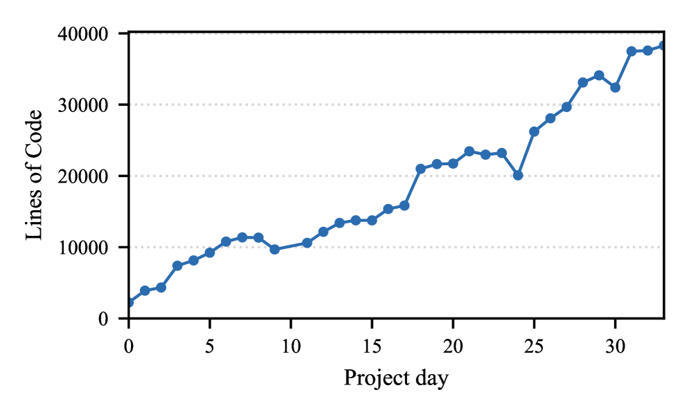

Testing, Credible Compilation, and Verification in the Axon Verified Compiler in Lean and Claude Code
Writing verified compilers is labor-intensive. The question is whether an AI coding agent (Claude Code) can produce a fully machine-checked compiler in Lean, and what development process makes this feasible.
The Axon compiler is written entirely in Lean by Claude Code, combining testing, credible compilation (translation validation), and full formal verification. The development process layers these validation techniques so that machine-checked correctness proofs eliminate the need to audit verified code. The compiler includes 9 optimizations (constant propagation, dead-code elimination, CSE, LICM, register allocation, etc.) developed over 34 days.

The final codebase is 38,188 lines of Lean, of which 30,997 are theorem statements. Code was produced over 34 project days with all optimizations formally verified. On Livermore loops benchmarks, the optimized Axon output (Axon-O) reaches roughly 19-20ms per kernel, comparable to Fortran -O1/-O2.
| Kind | Lines of Code |
|---|---|
| theorem | 30,997 |
| def | 5,680 |
| partial def | 750 |
| inductive | 529 |
| structure | 166 |
| Total | 38,188 |